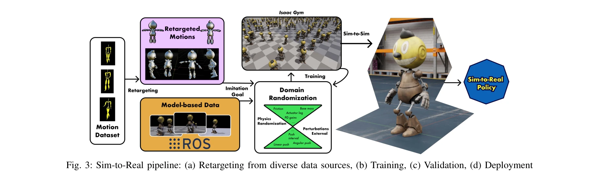
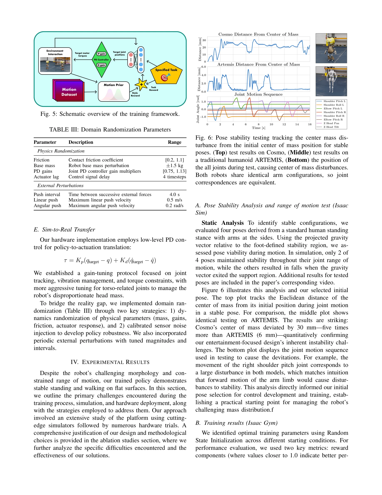

Essence

Fig. 1: Cosmo: an entertainment humanoid robot with covers
미적 설계 제약이 있는 엔터테인먼트 휴머노이드 로봇 Cosmo를 위해 Adversarial Motion Priors (AMP)를 기반으로 한 강화학습 보행 시스템을 제시하며, 극단적인 질량 분포와 움직임 제약 하에서도 자연스러운 보행 행동을 학습할 수 있음을 보여준다.
저자: Arturo Flores Alvarez, Fatemeh Zargarbashi, Havel Liu, Shiqi Wang, Liam Edwards, Jessica Anz, Alex Xu, Fan Shi, Stelian Coros, Dennis W. Hong | 날짜: 2025-09-06 | URL: https://arxiv.org/abs/2509.05581
Fig. 1: Cosmo: an entertainment humanoid robot with covers
미적 설계 제약이 있는 엔터테인먼트 휴머노이드 로봇 Cosmo를 위해 Adversarial Motion Priors (AMP)를 기반으로 한 강화학습 보행 시스템을 제시하며, 극단적인 질량 분포와 움직임 제약 하에서도 자연스러운 보행 행동을 학습할 수 있음을 보여준다.

Fig. 3: Sim-to-Real pipeline: (a) Retargeting from diverse data sources, (b) Training, (c) Validation, (d) Deployment

Fig. 5: Schematic overview of the training framework.
총평: 본 논문은 엔터테인먼트 로봇의 미적 설계 제약이라는 실제적이고 새로운 도전 문제를 다루면서 AMP 기반 학습을 성공적으로 적용한 의미 있는 연구이다. 극단적인 질량 분포와 제한된 감각 조건에서의 안정적인 sim-to-real 보행 달성은 인상적이지만, 특정 로봇 플랫폼에 대한 높은 맞춤화와 실험의 범위 제한이 일반화 가능성을 감소시킨다.